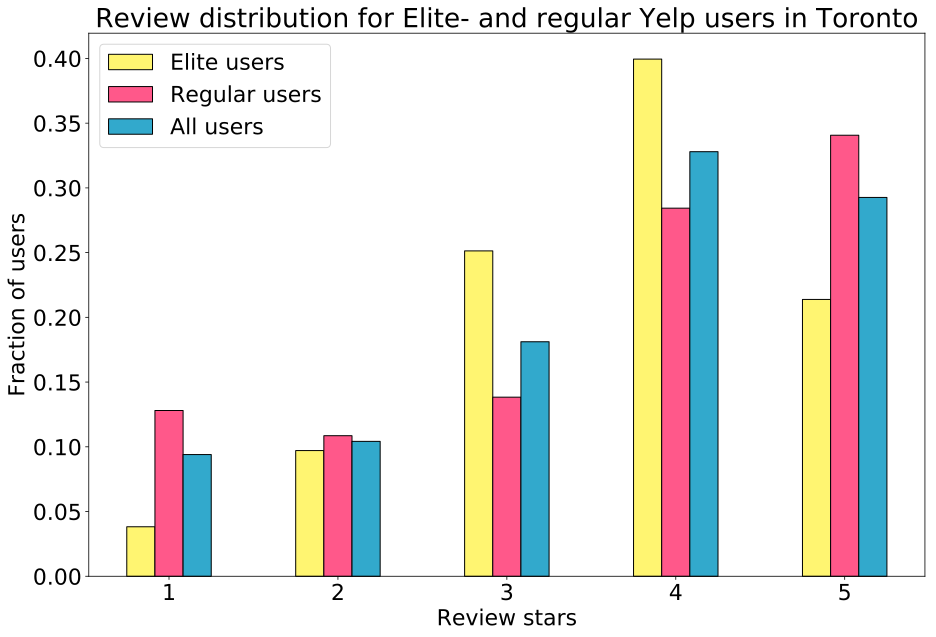
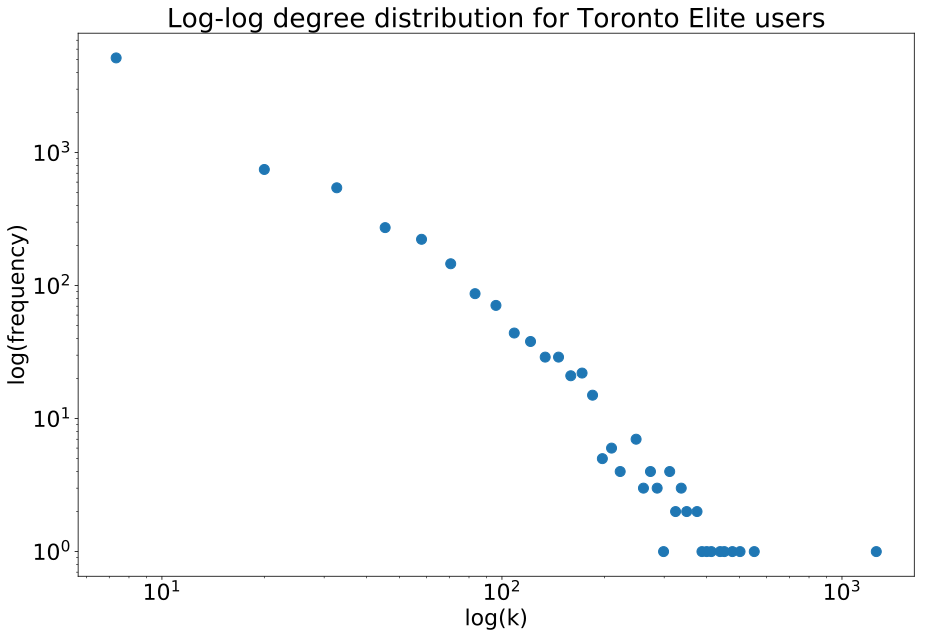
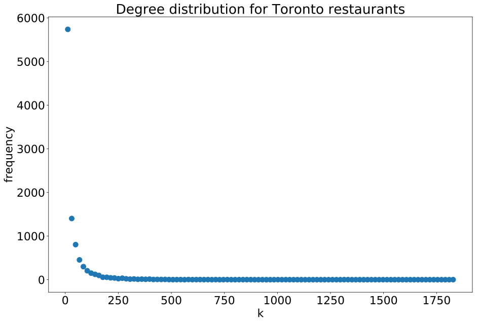
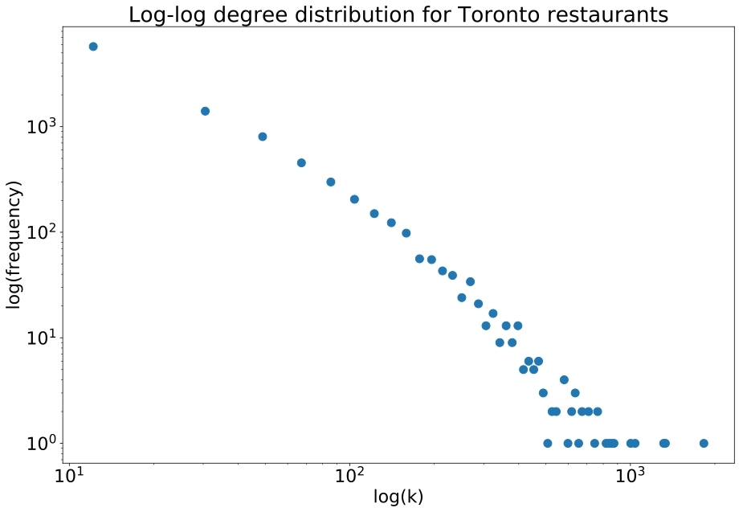

<!DOCTYPE html>
<html lang="en">

<head>
	<meta charset="utf-8">
	<title>Analysis of Yelp 'Elite' Reviewers</title>
	<link rel="shortcut icon" href="img/favicon.ico" type="image/x-icon">
	<link rel="icon" href="img/favicon.ico" type="image/x-icon">
	<!-- Prevents stupid favicon error in JS Console -->
	<script src="https://d3js.org/d3.v4.min.js"></script>
	<link rel="stylesheet" href="https://maxcdn.bootstrapcdn.com/bootstrap/3.3.7/css/bootstrap.min.css">
	<link rel="stylesheet" href="css/custom.css">
	<link rel="stylesheet" href="css/md/github-markdown.css">
</head>

<body>

	<article class="markdown-body" style="width: 1500px">
		<h1>Analysis of Yelp 'Elite' Reviewers</h1>

		<p>Link to GitHub Repository:
			<a href="https://github.com/thomasnilsson/02806/tree/master/PROJECT">thomasnilsson/02806/tree/master/PROJECT</a>
		</p>
		<p>
			Link to Explainer Page:
			<a href="https://thomasnilsson.github.io/02806/PROJECT/explainer.html">Explainer page</a>
		</p>

		<h2>Data Story</h2>
		<p>
			Yelp.com is a popular website and mobile app that allows users to both read and post reviews and ratings of
			restaurants and businesses. It has a substantial user-base consisting of over 130 million visitors per month. The
			overwhelming majority of users are casual users of the service and mainly use Yelp as a way to finding restaurants
			based on the reviews of other people. The degree to which casual users contribute to the review economy, so to
			speak, vary greatly, with the majority, only leaving a couple of reviews in total.
			<br><br>
			However, there exists a very particular subset of users of the service which Yelp have named their “Elite” users.
			According to Yelp, their Elite users are supposed to be a small group of in-the-know users who have a large impact
			on their local community. For example, Yelp claims that these users reveal the hot spots for fellow locals, serve as
			city ambassadors, and have sway in the community.

		</p>

		<h3>The Aim of this Project</h3>
		<p>
			The purpose of this project is to investigate the properties of Yelp’s Elite users. For this paper, the focus will
			lie on Yelp’s two primary claims about their Elite users:
			<br><br>
			Yelp states that its Elite users have high connectivity, which means that they are connected with many other users
			and interact often with members of their Yelp community.
			<br><br>
			Yelp claims that its Elite users make up the “true heart of the Yelp community.” Third, Yelp claims that its users
			have a high contribution, which means that the user has made a large impact on the site with meaningful and
			high-quality reviews.
			<br><br>
			The first goal of our project is to analyze whether the above claims about Yelp’s Elite users are quantifiably
			valid. For this, we will specify several characteristics which we expect Elite users to have based on these claims.
			We will then perform analyses on Yelp’s dataset in order to determine whether these properties are truly represented
			among the Elite users. The secondary goal of our project is to find which properties are most indicative of Elite
			status on Yelp.
			<br><br>
			The analyses for the first goal can be used for this purpose as well. This kind of information may be useful for
			those who are interested in becoming Elite members on Yelp. In order to become a member of the “Elite Squad,” a user
			must go through an application process. Despite the suggestions presented above, Yelp doesn’t provide any specific
			criteria on exactly what characteristics a user must have to become Elite. The mystery behind the selection process
			for Elite users is well-documented.

		</p>

		<h4>Review Distribution for Elite and Non-elite users</h4>
		<object data="svg" type="image/svg+xml">
			
		</object>

		<!-- <object data="svg" type="image/svg+xml">
			
		</object>

		<object data="svg" type="image/svg+xml">
			
		</object>

		<object data="svg" type="image/svg+xml">
			
		</object>

		<object data="svg" type="image/svg+xml">
			
		</object>

		<object data="svg" type="image/svg+xml">
			
		</object>

		<object data="svg" type="image/svg+xml">
			
		</object>

		<object data="svg" type="image/svg+xml">
			
		</object>

		<object data="svg" type="image/svg+xml">
			
		</object> -->


</body>
<script src="js/index.js"></script>

</html>